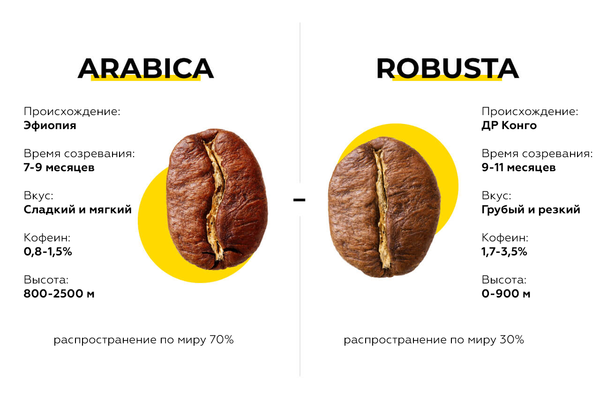

Арабика и робуста - два основных вида кофейных зерен, которые отличаются по ряду характеристик, таких как вкус, аромат, содержание кофеина и условия произрастания.
Арабика обычно считается более высококачественным видом кофе. У нее более сложный и нежный вкус, с богатым ароматом и кислотностью. Робуста имеет более сильный и горький вкус, а также содержит больше кофеина.
Арабика очень прихотлива к условиям и растёт на высотах от 600 до 2000 метров, и иногда даже выше. Выращивать арабику — дорого и сложно. Она легко может заболеть и чтобы получить хороший урожай, нужно постоянно ухаживать за деревьями, удобрять почву, а в некоторых регионах сооружать системы искусственного орошения.
Для робусты важно, чтобы было тепло. Поэтому она растёт только в тропическом климате. Но всё остальное — вторично. Робуста может расти на равнинах и в горах. Она легко выдерживает жару и ливни, не болеет и ей не нужен тщательный уход.
В арабике много липидов и сахаров, которые делают вкус интенсивным и кислотным. В конкретном сорте арабики из конкретного региона можно почувствовать сладость ягод, кислотность цитрусовых, аромат цветов и орехов.
В робусте больше кофеина и хлорогеновой кислоты и мало липидов и сахаров. Это делает робусту хорошим энергетиком, но кофеин также придаёт кофе горечь и тяжёлый аромат. Вкус робусты — терпкий и плоский. Добиться от него оттенков, как у арабики просто невозможно.
Вкус сильно зависит от того, какой уход получает кофе на ферме. То, что робуста неприхотлива к условиям, не значит, что за ней не нужно ухаживать. Хорошая робуста, за которой следят и ухаживают, будет лучше арабики, которой не уделяют внимание.
